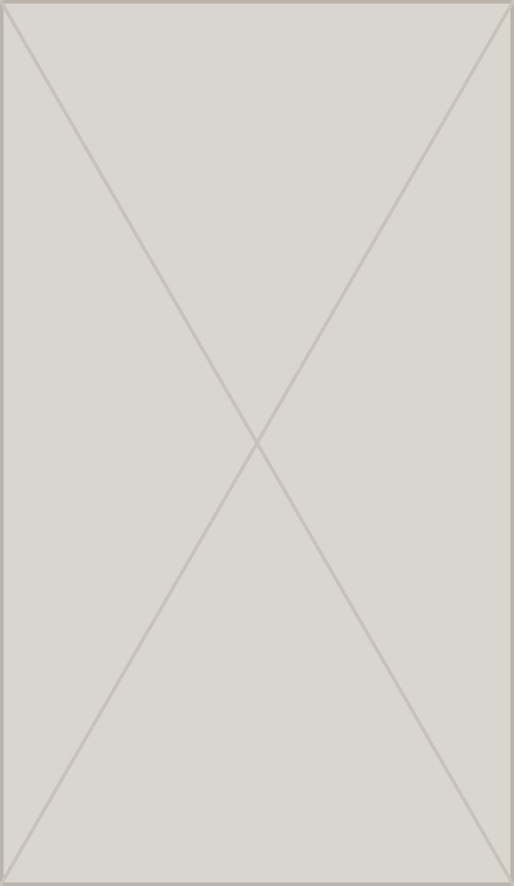
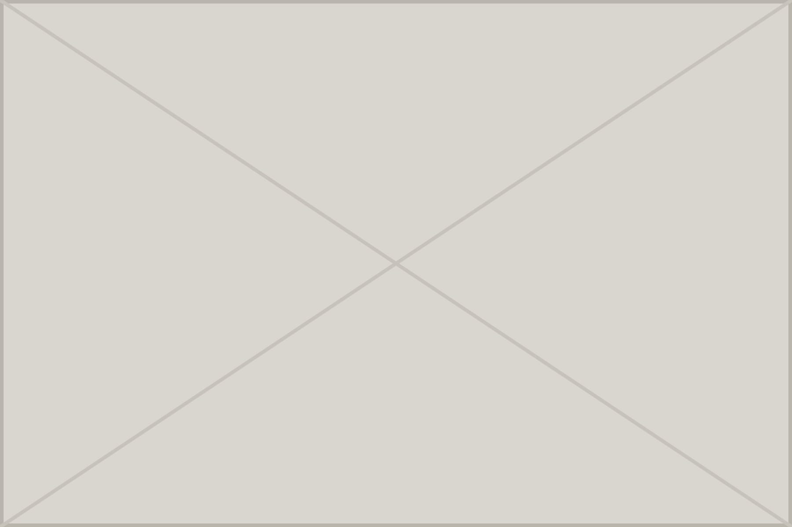
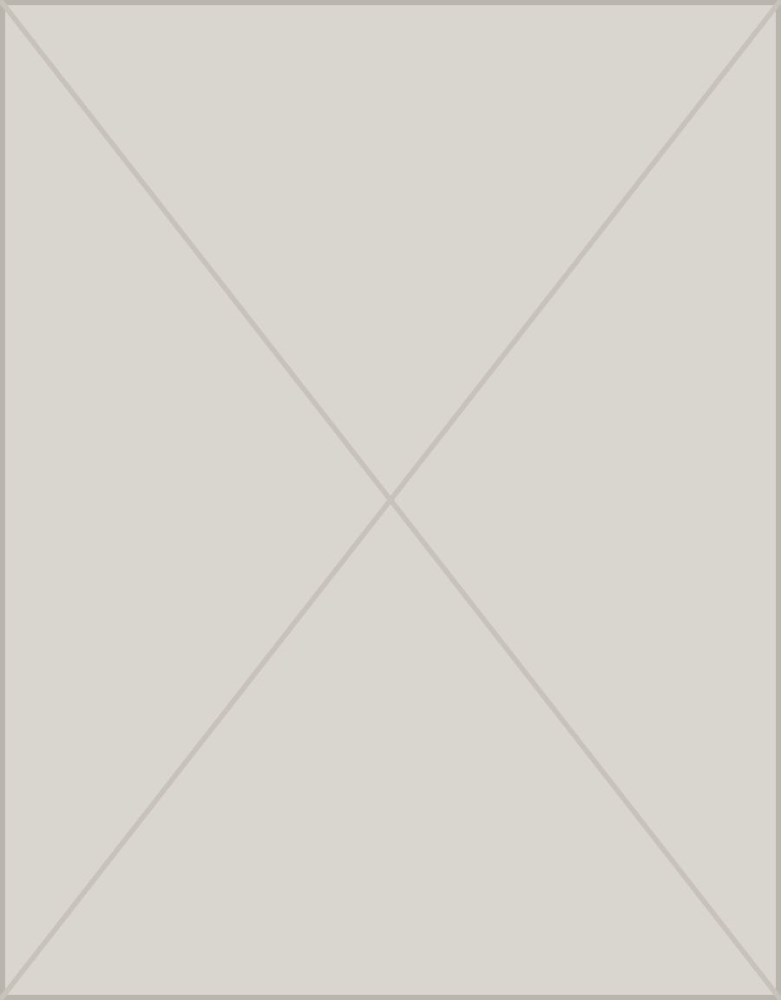

Prof. Dr. Gunter De Win · Website
Three design options
Each option is a complete one-page website with the same content – Home, About & Approach, Speaking, Research, Media and Contact – presented in a different visual direction. Open each one on desktop and on a phone, then choose a direction (or a combination).

Editorial
Light and classic, like a quality journal. Off-white, midnight navy and antique gold, elegant serif headings. Calm, authoritative and very readable.
View option 1 →
Stage
Dark and cinematic, built for conference organisers. A full-screen congress photograph, large typography and a muted crimson accent.
View option 2 →
Lifelong
Warm and approachable, centred on the “Lifelong · Integrative · Functional · Evidence-based” idea. Designed to match a future educational Instagram account.
View option 3 →These are private design proposals. Wording, titles, affiliations, photographs and contact details are drafts based on the supplied CV and biography and must be approved by Prof. De Win before publication. No patient booking is offered on any option.